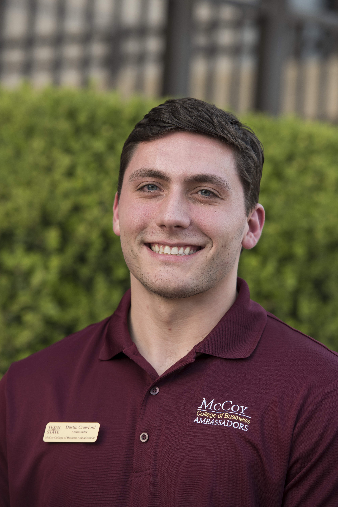

About Me
 My name is Dustin Crawford. I recently graduated from Texas State University with a Bachelor of Business Administration in management, with a concentration in entrepreneurial studies.Startups and sales are my two greatest passions. Internships with SKU Consumer Packaged Goods Accelerator and MassChallenge have helped me gain insights on the startup process and many of challenges faced by entrepreneurs. While at my internships, I have helped startups build brand awareness, obtain funding and put products on store shelves.
After graduation, I accepted a full-time position at MassChallenge Texas. While there, I assisted startups with investor research, pitch creation and built a portfolio of over $250,000 in free startup resources for MassChallenge Texas startups.
My passion for sales has been realized with over a year of fitness consulting at Gold’s Gym. My time at Gold's Gym has helped me develop into a high quality sales person and a more effective communicator.